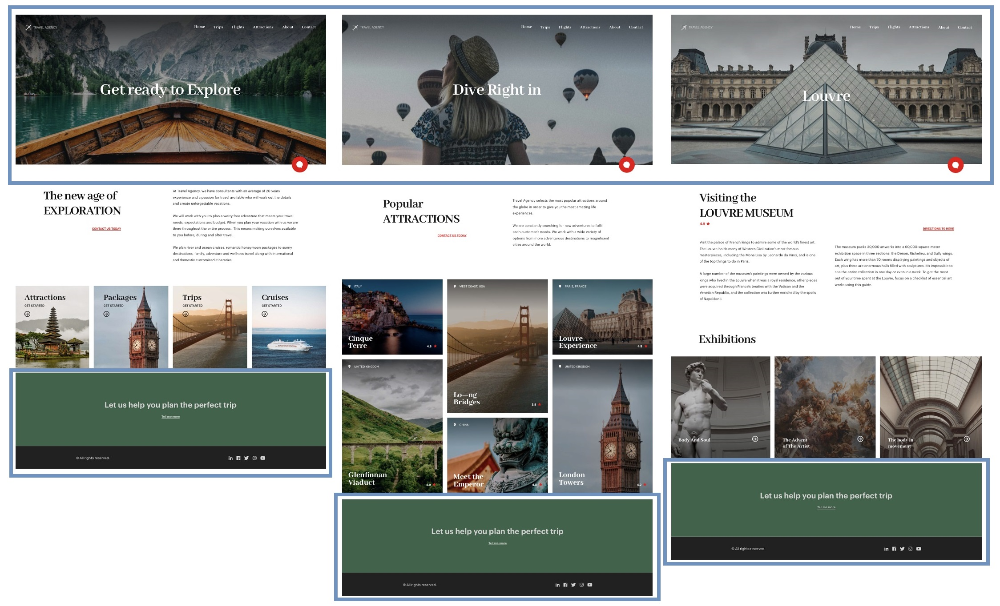

Having seen how to abstract design, you should also know that there are other (functional) abstractions that will surely prove more familiar.
GeneXus has the following articulable elements (in a decreasing degree, from most compound to most atomic):
● Web Page (Transaction or Web Panel) or Panel (Native Mobile including the WorkWith Object, or Angular): object that programs the specific content of the screen with which the user will be interacting during runtime.
● Master Page: object for programming, only once, the behavior and interface elements that will be repeated on all screens to be loaded in a specific area designed for that purpose (the content placeholder).
● Components or Web Components: objects that may be embedded within other objects to avoid repeated programming and design. They are a sort of mini (Web) Panels.
● Stencils: objects, non-executable on their own, that are inserted into layouts of Components, Web Pages or Panels. They only allow the grouping of design aspects, as opposed to (Web) Components which also enable this with behavior.
● User control: objects that translate third-party controls into GeneXus language in order to use them in a simple and uniform manner on GeneXus screens, like any other control.
● Container controls: Tables, Grids, and so on.
● Atomic controls: text, attributes or variables, images, etc.
When comparing them alongside one another, in the first three screens of the web app for desktop you will clearly see an unchanging footer, and a header for which only the background image and the caption of the Hero Text will change, though not its functionality:

Each of these three screens is divided in two:
● a Master Page for the header and footer, and
● the actual Web Panel in correspondence with the screen.
The Master Page is capable of knowing, through the Pgmname property, which Web Panel will be loaded every time in its Content Placeholder control, so, based on that, it will be able to determine the hero image to be loaded and the text that will go on it.
Clearly then, the page that so far has been worked as a Web Panel that included the simplified Header will become a Master Page.
And, according to the video, you will continue working as shown before, defining classes to convey style to the controls that will now be separated into different Web Panels.
Since GeneXus 17 Upgrade 6.
| Backlinks |
| Toc:Design Systems |